简述从后端为主的MVC时代到前端为主的MVVM时代的演进，V8引擎。
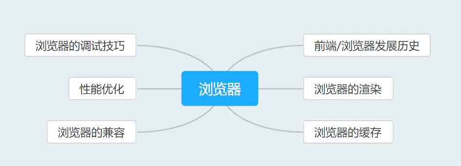
前端发展历史
早期时代（1990-）
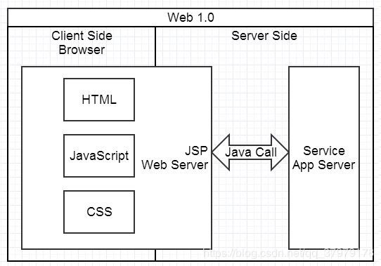
Web 1.0 时代，非常适合创业型小项目，不分前后端，经常 3-5 人搞定所有开发。页面由 JSP、PHP 等工程师在服务端生成，浏览器负责展现。基本上是服务端给什么浏览器就展现什么，展现的控制在 Web Server 层。
这种模式的好处是简单明快，适合小型项目。
但是，业务总会变复杂，此时会遇到这种情况：
- 1、Service 越来越多，调用关系变复杂 前端开发难以本地化，但这对研发效率的影响大。
- 2、JSP 等代码的可维护性越来越差前后端的职责不清晰，JSP变成了一个灰色地带。经常为了赶项目，为了各种紧急需求，会在 JSP 里揉杂大量业务代码，往往会带来大量维护成本。
所以，为了提高代码的可维护性。为了让前后端分工更合理高效。提出了MVC。
后端为主的 MVC 时代
为了降低复杂度，以后端为出发点，有了 Web Server 层的架构升级，比如 Structs、Spring MVC 等，这是后端的 MVC 时代。
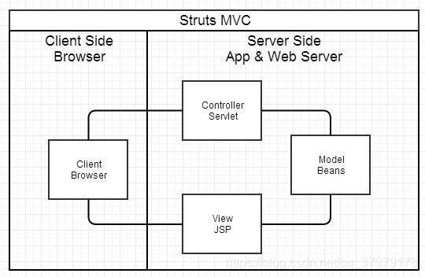
后端MVC时代，服务器返回的都是HTML页面，并且是渲染后返回给用户。绝大部分后端服务器，都做一件事情：接收用户发来的请求，返回一段响应内容。
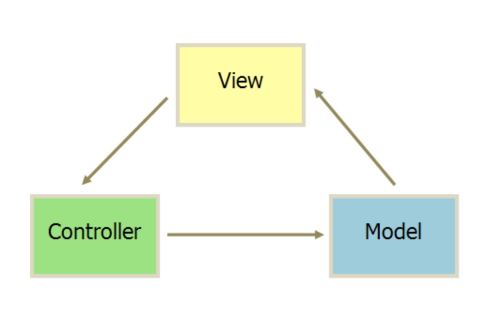
简单理解：用户操作->View（负责接收用户的输入操作）->Controller（业务逻辑处理）->Model（数据持久化）->View（将结果反馈给View）。每一层都对外提供接口（Interface），供上面一层调用。。
工作原理：
- M指数据库 文件等；V指HTML模板；C则是HTTP请求路由、搜索引擎、数据分析、文件服务等。
- 用户在浏览器进行了一些操作，发送请求给后端。
- Controller先从model获取数据，再获取HTML内容，将数据填入HTML，生成view，再返回给用户。
典型问题是：
- 1、前端开发重度依赖开发环境。 这种架构下，前后端协作有两种模式：一种是前端写 demo，写好后，让后端去套模板，来回沟通调整的成本比较大。另一种协作模式是前端负责浏览器端的所有开发和服务器端的View层模板开发，不足就是前端开发重度绑定后端环境。
- 2、前后端职责依旧纠缠不清。 前端往往就会被要求在模板层写出不少业务代码。还有一个很大的灰色地带是 Controller，页面路由等功能由后端来实现。Controller 本身与 Model 往往也会纠缠不清。
AJAX带来的SPA时代（2005）
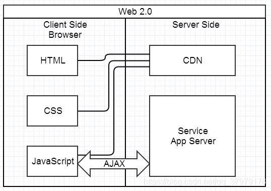
这种模式下，前后端的分工非常清晰，前后端的关键协作点是 Ajax 接口。
与 JSP 时代区别不大，复杂度从服务端的 JSP 里移到了浏览器的 JavaScript，浏览器端变得很复杂。
类似 Spring MVC，这个时代开始出现浏览器端的分层架构：
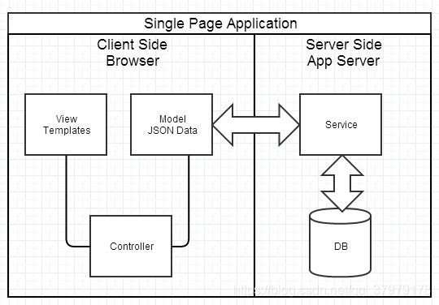
对于 SPA 应用，有几个很重要的挑战：
- 1、前后端接口的约定。 在业界有 API Blueprint 等方案来约定和沉淀接口，使得前后端可以在约定接口后实现高效并行开发。
- 2、前端开发的复杂度控制。 SPA 应用大多以功能交互型为主，JavaScript 代码过十万行很正常。大量 JS 代码的组织，与 View 层的绑定等。典型的解决方案是业界的 Backbone，但 Backbone 做的事还很有限，依旧存在大量空白区域需要挑战。
前端为主的MVVM时代（2010）
早期有对mvc改进从而产生了mvp架构，MVP是把MVC中的Controller换成了Presenter（呈现），目的就是为了完全切断View跟Model之间的联系，由Presenter充当桥梁，做到View-Model之间通信的完全隔离。
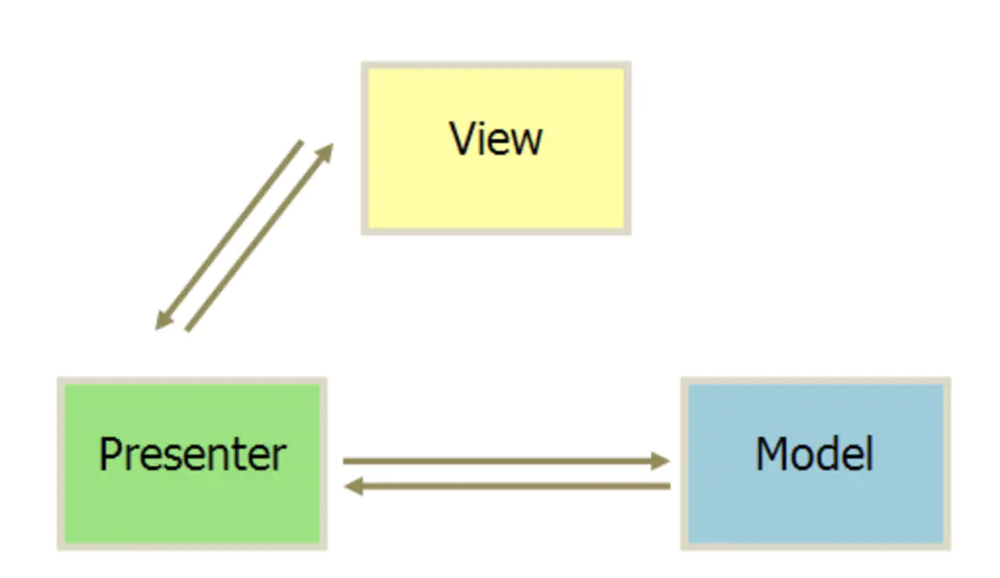
.NET程序员熟知的ASP.NET webform、winform基于事件驱动的开发技术就是使用的MVP模式。控件组成的页面充当View，实体数据库操作充当Model，而View和Model之间的控件数据绑定操作则属于Presenter。控件事件的处理可以通过自定义的IView接口实现，而View和IView都将对Presenter负责。
如果说MVP是对MVC的进一步改进，那么MVVM则是思想的完全变革。
它是将“数据模型数据双向绑定”的思想作为核心，因此在View和Model之间没有联系，通过ViewModel进行交互，而且Model和ViewModel之间的交互是双向的，因此视图的数据的变化会同时修改数据源，而数据源数据的变化也会立即反应到View上。
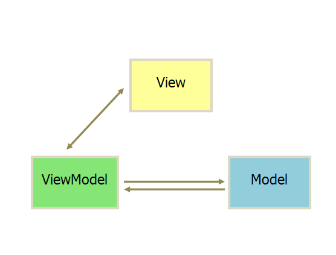
MVVM最早由微软提出来，它借鉴了桌面应用程序的MVC思想，在前端页面中，把Model用纯JavaScript对象表示，View负责显示，两者做到了最大限度的分离。
把Model和View关联起来的就是ViewModel。ViewModel负责把Model的数据同步到View显示出来，还负责把View的修改同步回Model。
MVVM的设计思想：关注Model的变化，让MVVM框架去自动更新DOM的状态，从而把开发者从操作DOM的繁琐步骤中解脱出来！
好处：
- 1、前后端职责很清晰。 前端工作在浏览器端，后端工作在服务端。清晰的分工，可以让开发并行，测试数据的模拟不难，前端可以本地开发。后端则可以专注于业务逻辑的处理，输出 RESTful 等接口。
- 2、前端开发的复杂度可控。 前端代码很重，但合理的分层，让前端代码能各司其职。
- 3、部署相对独立，产品体验可以快速改进。
不足之处：
- 1、代码不能复用。比如后端依旧需要对数据做各种校验，校验逻辑无法复用浏览器端的代码。
- 2、全异步，对 SEO 不利。往往还需要服务端做同步渲染的降级方案。
- 3、性能并非最佳，特别是移动互联网环境下。
- 4、SPA 不能满足所有需求，依旧存在大量多页面应用。URL Design 需要后端配合，前端无法完全掌控。
Node 带来的全栈时代
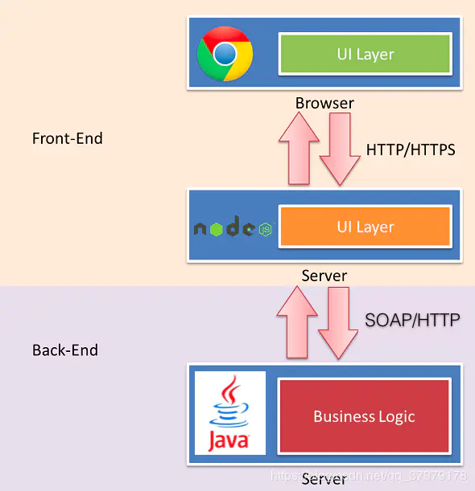
随着 Node.js 的兴起，JavaScript 开始有能力运行在服务端。
在这种研发模式下，前后端的职责很清晰。对前端来说，两个 UI 层各司其职：
- 1、Front-end UI layer 处理浏览器层的展现逻辑。通过 CSS 渲染样式，通过 JavaScript 添加交互功能，HTML 的生成也可以放在这层，具体看应用场景。
- 2、Back-end UI layer 处理路由、模板、数据获取、cookie 等。通过路由，前端终于可以自主把控 URL Design，这样无论是单页面应用还是多页面应用，前端都可以自由调控。后端也终于可以摆脱对展现的强关注，转而可以专心于业务逻辑层的开发。
通过 Node，Web Server 层也是 JavaScript 代码，这意味着部分代码可前后复用，需要 SEO 的场景可以在服务端同步渲染，由于异步请求太多导致的性能问题也可以通过服务端来缓解。前一种模式的不足，通过这种模式几乎都能完美解决掉。
与 JSP 模式相比，全栈模式看起来是一种回归，也的确是一种向原始开发模式的回归，不过是一种螺旋上升式的回归。
基于 Node 的全栈模式，依旧面临很多挑战：
- 1、需要前端对服务端编程有更进一步的认识。比如 network/tcp、PE 等知识的掌握。
- 2、Node 层与 Java 层的高效通信。Node 模式下，都在服务器端，RESTful HTTP 通信未必高效，通过 SOAP 等方式通信更高效。一切需要在验证中前行。
- 3、对部署、运维层面的熟练了解，需要更多知识点和实操经验。
- 4、大量历史遗留问题如何过渡。这可能是最大最大的阻力。
前端时间轴
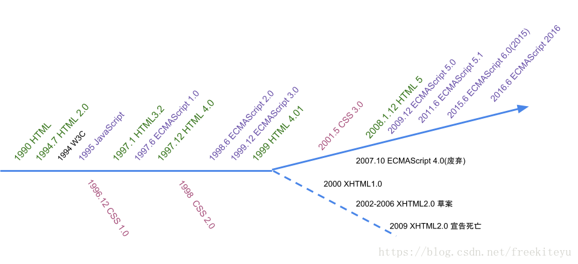
- 1990年，Tim 以超文本语言 HTML 为基础在 NeXT 电脑上发明了最原始的 Web 浏览器。
- 1994年11月，网景公司成立，并发布Mosaic Netscape 1.0 beta 浏览器，后改名为 Navigator。
- 1994 W3C诞生。
- 1995年网景推出JavaScript。
- 1996年微软发布JScript并内置于IE3。JavaScript与JScript存在差异。导致程序员开发的网页无法同时兼容IE和Navigator浏览器。IE开始抢夺Navigator的市场份额，导致了第一次浏览器大战。
- 1996年11月，网景将JavaScript提交到ECMA以便将其国际标准化。
- 1997年6月，ECMAScript1.0推出。
- 1998.6 ECMAScript 2规范发布。
- 1999.12 ECMAScript 3 规范发布。此后10年，基本没有发生变动。ECMAScript 3 成为当今主流浏览器最广泛使用和实现的语言规范基础。
- 2001.5 W3C 推出了 CSS 3.0 规范草案
- 2004年11月。火狐浏览器诞生。第二次浏览器战争开始。（第一次浏览器战争以IE的完胜告终，垄断浏览器市场，并且IE不遵循W3C标准）
- 2005年 AJAX诞生。局部刷新页面。
- 第二次浏览器战争中，随着以 Firefox 和 Opera 为首的 W3C 阵营与 IE 对抗程度的加剧，浏览器碎片化问题越来越严重，不同的浏览器执行不同的标准，对于开发人员来说这是一个噩梦。
- 为了解决浏览器兼容性问题，Dojo、jQuery、YUI、ExtJS、MooTools 等前端 Framework 相继诞生。前端开发人员用这些 Framework 频繁发送 AJAX 请求到后台，在得到数据后，再用这些 Framework 更新 DOM 树。
- 其中，jQuery独领风骚，几乎成了所有网站的标配。
- 2008，HTML5草案发布。
- 2008.12 Chrome浏览器诞生，并搭配JavaScript引擎V8（V8是被设计用来提高网页浏览器内部JavaScript执行的性能）。
- 2009.12 ECMAScript 5.0 规范发布。
- 2009 Node.js诞生。
- 2010年起，Angular ，Vue， React MVVM框架诞生。
- 2015 年 6 月，ECMAScript 6.0 发布。
引擎V8与JavaScript
代码的概念
高级语言代码:
高级语言又主要是相对于汇编语言而言的，它是较接近自然语言和数学公式的编程，基本脱离了机器的硬件系统，用人们更易理解的方式编写程序。编写的程序称之为源程序。java，c，c++，C#等都是高级语言。
汇编语言:
汇编语言作为一门低级语言，对应于计算机或者其他可编程的硬件。它和计算机的体系结构以及机器指令是强关联的。不同的汇编语言代码对应特定的硬件。
字节码:
字节码严格来说不算是编程语言，而是高级编程语言为了种种需求（可移植性、可传输性、预编译等）而产生的中间码。
机器码:
机器码是一组可以直接被CPU执行的指令集，
每一条指令都代表一个特定的任务，或者是加载，或者是跳转，亦或是计算操作等等。属于最低级的语言。
高级语言的分类
编译 Compile：把整个程序源代码翻译成另外一种代码，然后等待被执行，发生在运行之前，产物是另一份代码。
解释 Interpret：把程序源代码一行一行的读懂然后执行，发生在运行时，产物是运行结果。
- 编译型语言。把做好的源程序全部编译成二进制代码的可运行程序。然后，可直接运行这个程序。执行效率高，但依赖编译器。代表性语言：C，C++。
- 解释型语言。把做好的源程序翻译一句，然后执行一句，直至结束。代表性语言：JavaScript。
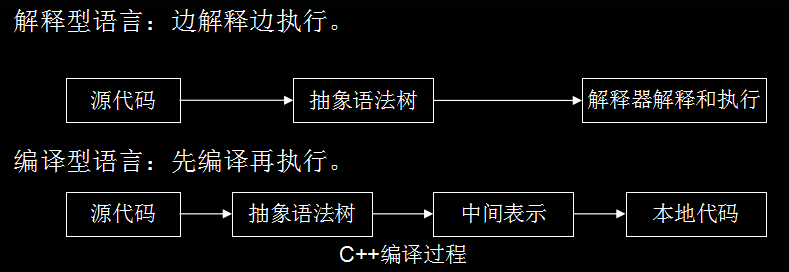
- 编译型语言的源代码不能直接翻译成机器语言，而是先翻译成中间代码，再由解释器对中间代码进行解释运行。源代码–> 中间代码–> 机器语言。
- 解释型语言程序只有在运行的时候才翻译成机器语言，每执行一次就翻译一次。
高级语言如何转化为计算机能看懂的语言
- 如果高级语言是编译型的。编译器会把源代码直接翻译成二进制的计算机可直接运行的机器语言，然后CPU就可以直接按指令执行。
- 如果高级语言是解释型的。以JavaScript为例，尽管是解释型语言，但具有编译特性，比如会先进行变量，函数的提升声明，再逐条进行解释。
编辑器/编译器/解释器/IDE的区别
编辑器
编写文字或代码的应用软件。如记事本。
编译器
将一种语言（通常为高级语言）翻译成另外一种语（低级语言）言的程序。这个转换的过程通常的目的是生成可执行的程序。
解释器
解释器是一种计算机程序，它直接执行由编程语言或脚本语言编写的代码，并不会把源代码预编译成机器码。可以把解释器看成一个黑盒子，我们输入源码，它就会实时返回结果。
不同类型的解释器，黑盒子里面的构造不一样，有些还会集成编译器，缓存编译结果，用来提高执行效率（例如 Chrome V8 也是这么做的）。
解释器通常是工作在「运行时」，并且对于我们输入的源码，是一行一行的解释然后执行，然后返回结果。
IDE
集成开发环境。集成了编辑器，编译器，链接器等功能。VSCode，Eclipse等都是。
浅谈v8引擎解释JavaScript的过程
随着web相关技术的发展，JavaScript承担的工作越来越多，所以需要一个更为强大的JS引擎去快速的解析和执行JavaScript脚本。所以v8出现了。
- V8引擎可以将JavaScript编译为原生的机器码，并且使用如内联缓存等方法提高性能。（JavaScript虽然是解释型高级语言，但具有编译性）
- 而其他JavaScript引擎采用的方法是转化为字节码或解释执行。
工作过程（编译阶段+运行阶段）
- 源代码被解析器转化为抽象语法树（AST）
- 使用JIT编译器的全代码生成器从AST直接生成本地可执行代码。
为了提高性能v8向很多同时解释形语言的老前辈学习了很多经验，我们先来看一下同是解释形语言的java的运行过程。
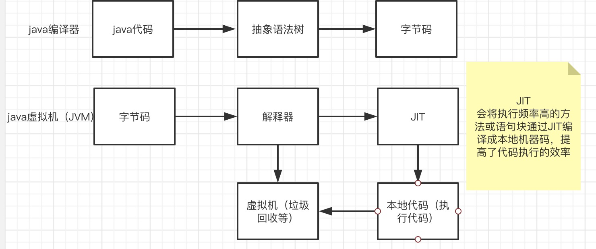
我们再看一下V8是怎么做的
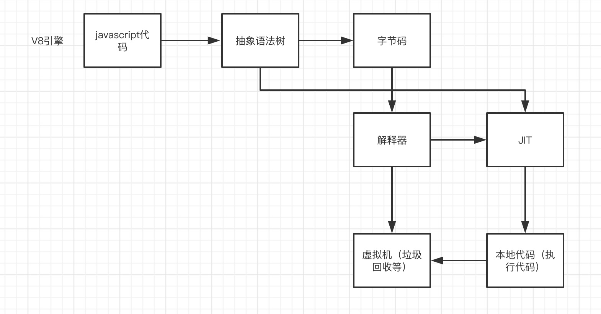
- Parse阶段：V8引擎负责将 JS 代码转换为 AST （抽象语法树）
- Ignition 阶段：解释器将 AST 转换为字节码，解析执行字节码也会为下一个阶段优化编译提供需要的信息
- TurboFan阶段：编译器利用上个阶段收集的信息，将字节码优化为可以执行的机器码
- Orioco阶段：垃圾回收阶段，将程序中不再使用的内存空间进行回收
整个过程和java的编译执行过程非常像
将javascript代码编译成抽象语法树再转化成字节码，通过解释器来执行，并通过JIT工具将部分字节码转化成可直接执行的本地代码。（java是分两个阶段完成，在编译阶段尽可能的生成高效的字节码。）
V8更加直接的将抽象语法树通过JIT技术转换成本地代码，放弃了在字节码阶段可以进行的一些性能优化，但保证了执行速度。虽然少了生成字节码这一阶段的性能优化，但极大减少了转换时间。
编译过程
首先我们要了解一下在执行编译运行过程中所用到的几个类
- Script类：表示是JavaScript代码，既包含源代码，又包含编译之后生成的本地代码，所以它既是编译入口，又是运行入口；
- Compiler类：编译器类，辅助Script类来编译生成代码，它主要起一个协调者的作用，会调用解释器（Parser）来生成抽象语法树和全代码生成器，来为抽象语法树生成本地代码；
- Parser类：将源代码解释并构建成抽象语法树，使用AstNode类来创建它们，并使用Zone类来分配内存；
- AstNode类：抽象语法树节点类，是其他所有节点的基类，它包含非常多的子类，后面会针对不同的子类生成不同的本地代码；
- AstVisitor类：抽象语法树的访问者类，主要用来遍历抽象语法树；
- FullCodeGenerator：AstVisitor类的子类，通过遍历抽象语法树来为JavaScrit生成本地代码；
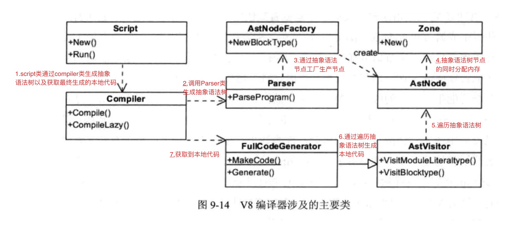
运行过程
- Script表示JavaScript代码，即包含源代码，又包含编译之后生成的本地代码，即是编译入口，又是运行入口；
- Execution：运行代码的辅组类，包含一些重要函数，如Call函数，它辅组进入和执行Script代码；
- JSFunction：需要执行的JavaScript函数表示类；
- Runtime：运行这些本地代码的辅组类，主要提供运行时所需的辅组函数，如：属性访问、类型转换、编译、算术、位操作、比较、正则表达式等；
- Heap：运行本地代码需要使用的内存堆类；
- MarkCompactCollector：垃圾回收机制的主要实现类，用来标记、清除和整理等基本的垃圾回收过程；
- SweeperThread：负责垃圾回收的线程。
执行过程如下:
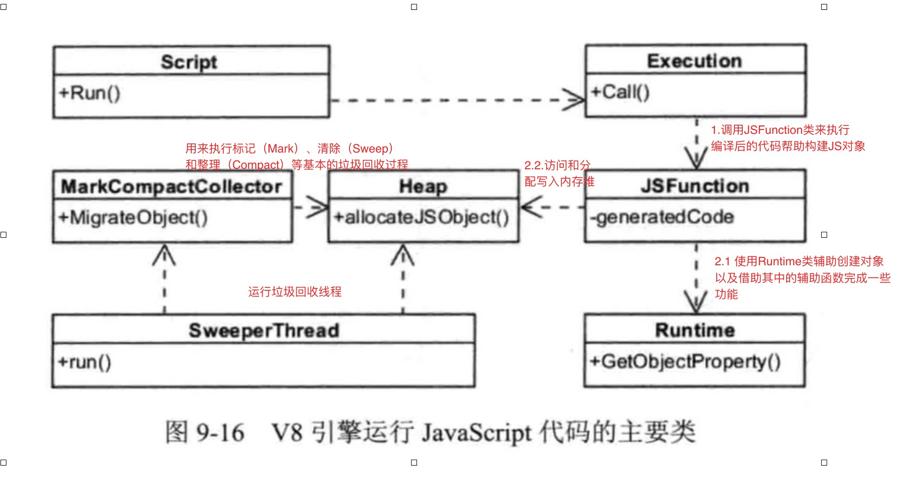
编译和执行的整体过程如下：
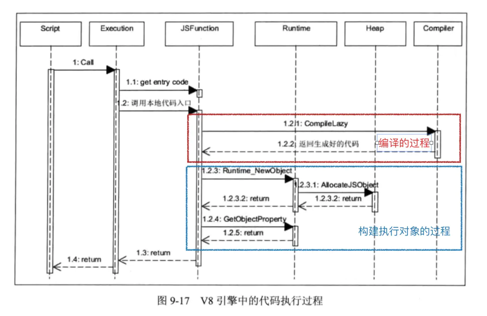
V8 VS JavaScriptCore
JavaScriptCore引擎：是WebKit中默认的JavaScript引擎，也是苹果开源的一个项目，应用较为广泛。最初，性能不是很好，从2008年开始了一系列的优化，重新实现了编译器和字节码解释器，使得引擎的性能有较大的提升。随后内嵌缓存、基于正则表达式的JIT、简单的JIT及字节码解释器等技术引入进来，JavaScriptCore引擎也在不断的迭代和发展。
V8引擎：自诞生之日起就以性能优化作为目标，引入了众多新技术，极大了带动了整个业界JavaScript引擎性能的快速发展。
总的来说，V8引擎较为激进，青睐可以提高性能的新技术，而JavaScriptCore引擎较为稳健，渐进式的改变着自己的性能。
JavaScript引擎工作流程（包含v8和JavaScriptCore）如下所示：
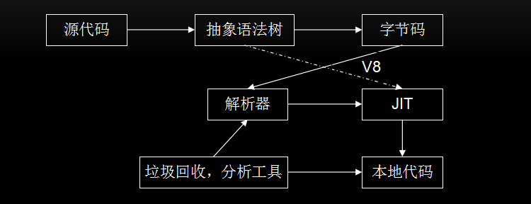
JavaScriptCore 的大致流程为：源代码–>抽象语法树–>字节码–>JIT–>本地代码。
V8：新增了字节码的中间表示，并加入了多层JIT编译器（如：简单JIT编译器、DFG JIT编译器、LLVM等）优化性能，不停的对本地代码进行优化。(在 V8 的 5.9 版本中，新增了一个 Ignition 字节码解释器，TurboFan 和 Ignition 结合起来共同完成JavaScript的编译，此后 V8 将与 JavaScriptCore 有大致相同的流程，Node 8.0中 V8 版本为 5.8)
数据表示方面：V8在不同的机器上使用与机器位数相匹配的数据表示，而在JavaScriptCore中句柄都是使用64位表示，其可以表示更大范围的数字，所以即使在32位机器上，浮点类型同样可以保存在句柄中，不再需要访问堆中的数据，当也会占用更多的空间。